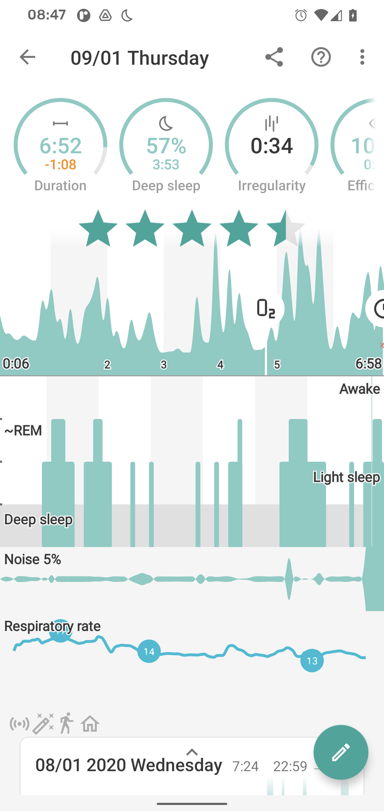
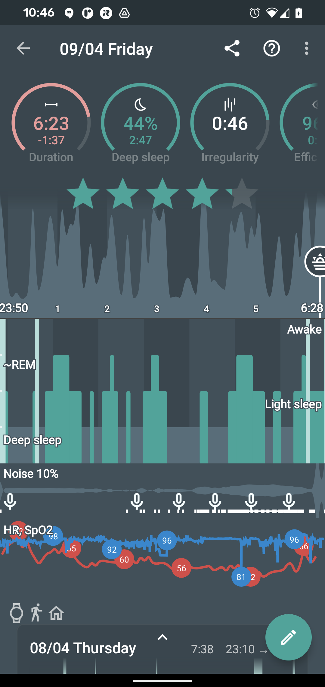

Makes use of sensors that can measure either your breath rate (sonar, Sleep phaser, and Polar H10), or your blood oxygenation (oximeter, some wearables).
A turquoise line on your sleep graph shows breath rate - see breath-line. A blue line on your graph depicts oxygen data - see spo2-graph.
Whenever a significant dip in value occurs, a O2 symbol icon:ic_action_cpap[] will be shown in the graph. This is a breathing disturbance. From those disturbances, we compute your RDI value. Monitoring breathing disturbances is important for link:sleep apnea detection.


RDI#
Respiratory Disturbance Index is the average count of respiratory disturbance episodes per hour. E.g. if you stop breathing once per every hour of your sleep, RDI would be 1.
- 0 - 10: RDI under 10 is considered normal, some of the disturbance events measure may be faults of the sensor and how tight the sensor is around your finger for instance.
- 10 - 15: RDI from 10 to 15 is considered a mild respiratory disturbance. We strongly recommend to do the measurements repeatedly to minimize any errors in measurement
- 15 - 30: RDI from 15 to 30 is considered moderate respiratory disturbance. It can be a warning sign. Definitely do measurement repeatedly to verify this result.
- 30 and more: RDI over 30 is considered severe. We recommend to consult your doctor.
Sonar breath rate tracking#
Sonar can measure your abdominal movements and thus estimate your breath rate, if the signal is strong enough. With the Sonar, no actions is required - you will automatically see breath rates on your sleep graph.
Sleep phaser breath rate tracking#
Sleep phaser can also measure your abdominal movements for estimating your breath rate. No actions is required - you will automatically see breath rates if the overall setting in your bedroom and the device in use reach the required level of sensitivity.
Oximeter SpO2 monitoring#
By using Oximeter or wearable, we can track blood oxygenation levels (SPO2) directly. Oximeters provide a better - more precise - respiratory issues tracking. They can even hint on some severe issues such as the link:Sleep apnea.
Settings -> Sleep tracking -> Wearables -> Pulse oximeter (Bluetooth)
Wearables SpO2 monitoring#
Reads SpO2 data from a wearable connected in Use wearable.
Settings -> Sleep tracking -> Wearables -> Pulse oximeter (Wear OS, Garmin..)
Warning: Not all wearables provide SpO2 data to our app. Check the compatibility table.
Low breath rate alarm#
If enabled, this will wake you up if you have a low breathing rate (or blood oxygen level) for a while. You can configure the sound, vibrations, or both.
Settings -> Sleep tracking -> Wearbales -> Low breath rate alarm
Warning: The alert is very prominent on purpose.